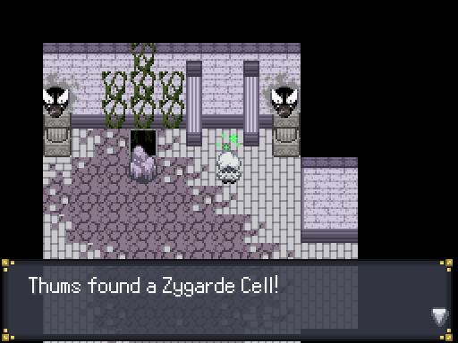
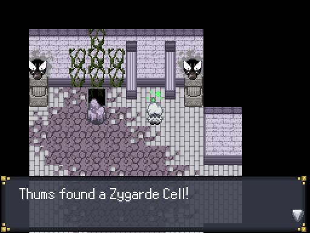
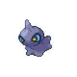
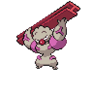
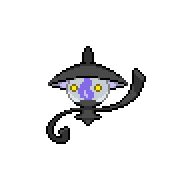
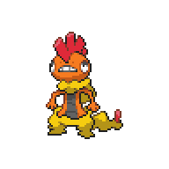
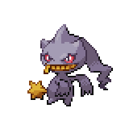

Wispy Ruins
Post-Badge Activities
Now that we have our fourth badge and changed the ways of Goldenleaf, there's a few things we can do in town. First off, the inhabitants of the house above the Route 3-Goldenleaf Gate will give us healing items, so go ahead and grab those. The house below Ren's house will have a Snubbull
 that you can get if you interact with it. If you go to the graveyard on the left side at night you can catch yourself a Misdreavus.
that you can get if you interact with it. If you go to the graveyard on the left side at night you can catch yourself a Misdreavus. Finally, now that we have four badge we can open the door we found earlier. Cut down the three beside the gym and enter the cave behind the waterfall. Step on the blue circle, and the door will open and let us optain a Big Nugget.
Finally, now that we have four badge we can open the door we found earlier. Cut down the three beside the gym and enter the cave behind the waterfall. Step on the blue circle, and the door will open and let us optain a Big Nugget.
We can also get another sidequest out of the way. For this quest, you'll need to have a Cherrim, Zebstrika, and Magcargo. Cherrim evolves from Cherubi at level 25, which you can get at the Chrisola Hotel Rooftop in East Gearen City. Blitzle evolves at level 27 and is catchable below Dr. Jenkel's lab in Gearen Junction, just west of the Route 1 train station. Finally, Slugma can be caught in Caratos Mountain behind the waterfall in Sheridan Arena, and evolves at level 38. With the Pokemon Breeder in Goldenleaf, you can evolve these Pokemon pretty quickly.
Once you have the three Pokemon in your party, head over to Route 2 and up to the top left corner of the map. The painter there will ask for the three Pokemon, and you'll get a Miracle Seed for the Cherrim, Charcoal for the Magcargo, and Magnet for the Zebstrika. Once you have shown him all three Pokemon, you'll get TM94 - Nature Power,
 which is a very versatile move in this game. Nature Power will change depending on the field it is used on, and will often turn into very powerful moves. With that, we've done all we can for now so head on back to Goldenleaf and talk to Narcissa and Aelita in front of the Giratina statue. Narcissa will open the path for us to continue.
which is a very versatile move in this game. Nature Power will change depending on the field it is used on, and will often turn into very powerful moves. With that, we've done all we can for now so head on back to Goldenleaf and talk to Narcissa and Aelita in front of the Giratina statue. Narcissa will open the path for us to continue.

Wispy Ruins

Wispy Ruins is initially a straightforward path, but before you get too deep you'll be dropped into the basement level by a few Shuppets. The path to continue here will be blocked until you find and play with 4 Shuppets that are located around the map. Here, you can also jump from platform to platform. Head over to the right and up, and you'll find the first Shuppet,
 but you'll need to do a bit of maneuvering to trap it. On the little roundabout area there's Battle Girl Moira
but you'll need to do a bit of maneuvering to trap it. On the little roundabout area there's Battle Girl Moira to the south and Punk Rudey
to the south and Punk Rudey to the north. Just a little bit north from the first Shuppet is the second Shuppet.
to the north. Just a little bit north from the first Shuppet is the second Shuppet.
The next to Shuppets are to the left side of the map. If you head up to the top left corner, you can find a gate with the Number 2, so open it to get a Dawn Stone.
 From there, the third Shuppet
From there, the third Shuppet is down south from there and the fourth
is down south from there and the fourth is even more south and a little to the right. You'll also see a Phantump
is even more south and a little to the right. You'll also see a Phantump or two roaming around, so be sure to catch one. We'll be able to get a special Pokemon in return for it in a little bit.
or two roaming around, so be sure to catch one. We'll be able to get a special Pokemon in return for it in a little bit.
Once you found all four Shuppets, head back to the center part of the map and head up. The Shuppets will remove the barrier, and you can progress further. Before going up the stairs, go past it and grab a Dusk Stone behind the one badge door.
 Go back, head up the stairs, and grab a Zygarde Cell.
Go back, head up the stairs, and grab a Zygarde Cell.
Once you exit that room to the right, you can head back out to Goldenleaf through the bottom exit. We can't progress to the right exit without Strength, so once you're ready head up through the top exit and up the stairs. On the second floor, Hiker Jeremie
 will battle you. You can also choose to battle Guitarist Vitali
will battle you. You can also choose to battle Guitarist Vitali who is all the way to the left of that floor. Once you're done, heal up and then head over to the left, then jump through the platforms. A bunch of Pokemon will appear to play with you.
who is all the way to the left of that floor. Once you're done, heal up and then head over to the left, then jump through the platforms. A bunch of Pokemon will appear to play with you.

PokeGang Scrafty and PokeGang Banette

Scraggy, Level 36 |
Dark | Brick Break |

Shuppet, Level 36 |
Ghost | Phantom Force |
|---|---|---|---|---|---|
| High Jump Kick | Hex | ||||
| Fighting | Chip Away | Shadow Ball | |||
| Scary Face | Will-O-Wisp | ||||
|

Gurdurr, Level 36 |
Fighting | Wake-Up Slap |

Lampent, Level 36 |
Ghost | Flame Burst |
| Rock Slide | Hex | ||||
| Chip Away | Fire | Shadow Ball | |||
| Bulk Up | Will-O-Wisp | ||||
|
Pancham, Level 36 |
Fighting | Circle Throw |
Duskull, Level 36 |
Ghost | Phantom Force |
| Vital Throw | Hex | ||||
| Slash | Shadow Ball | ||||
| Body Slam | Confuse Ray | ||||
|

Scraggy, Level 38 |
Dark | Sludge Bomb |

Banette, Level 38 |
Ghost | Phantom Force |
| High Jump Kick | Hex | ||||
| Fighting | Chip Away | Shadow Ball | |||
| Scary Face | Will-O-Wisp |
This is effectively an 6v8 in a Haunted Field, but your opponents aren't exactly the strongest at this point. Psychic-type and Fairy-type moves are weakened, so similar to the Narcissa battle you can switch the field with Flash to get the advantage. Once you defeat them, the exit will be on the right. There'll be a healing spot soon so there's no need to go back and heal, so head out through the right and enter Route 4.